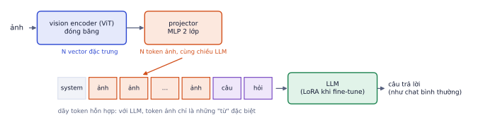
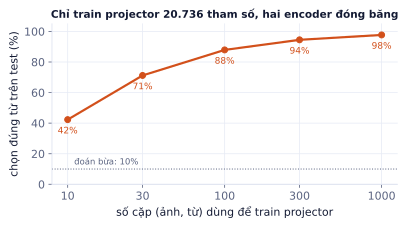
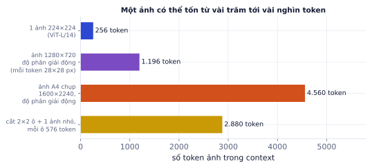

Bài 1
Số token ảnh
tính tayMột VLM dùng ảnh 336×336, patch 14, mỗi mảnh một token.
Lời giải
24 × 24 = 576 token mỗi ảnh. 4 ảnh tốn 2.304 token trước khi có chữ nào: so sánh nhiều ảnh nhanh chóng chiếm context và chi phí.
Vision-language model (VLM) đọc được cả ảnh lẫn chữ và trả lời bằng chữ: mô tả ảnh, đọc hóa đơn, trả lời câu hỏi về biểu đồ, so sánh hai sản phẩm. Bài này giải thích kiến trúc chung của hầu hết VLM mã nguồn mở (kèm thí nghiệm nhỏ cho thấy vì sao một "cầu nối" nhỏ là đủ), cách chúng được train, chuyện token ảnh và chi phí, và cách dùng VLM an toàn cho tài liệu quan trọng.
Rất nhiều việc freelance AI thực tế có ảnh: trích xuất thông tin từ hóa đơn, chứng từ, ảnh chụp màn hình; mô tả và phân loại ảnh sản phẩm cho shop; trả lời khách hàng gửi kèm ảnh. VLM làm được những việc này với vài dòng code, nhưng cũng có kiểu lỗi riêng (đọc sai số, bịa chi tiết không có trong ảnh) mà bạn phải biết để thiết kế hệ thống đáng tin.
| Tác vụ | Ví dụ |
|---|---|
| Mô tả ảnh (captioning) | viết mô tả sản phẩm từ ảnh chụp |
| Hỏi đáp ảnh (VQA) | "chiếc ghế này có tay vịn không?" |
| Đọc tài liệu | trích xuất các trường của hóa đơn thành JSON |
| Hiểu biểu đồ, màn hình | "tháng nào doanh thu cao nhất?" từ ảnh biểu đồ |
| So sánh nhiều ảnh | "hai sản phẩm này khác nhau ở đâu?" |
Hầu hết VLM mã nguồn mở (LLaVA, Qwen-VL, InternVL, SmolVLM) theo cùng một khuôn:

| Khối | Vai trò | Thường là |
|---|---|---|
| Vision encoder | ảnh → dãy vector, mỗi mảnh một vector | ViT từ CLIP hoặc SigLIP (P7.1) |
| Projector | chiếu vector ảnh sang không gian embedding của LLM | MLP 2 lớp |
| LLM | xử lý chuỗi token hỗn hợp, sinh câu trả lời | Qwen, Llama, Gemma… |
Ý tưởng then chốt: không cần train lại từ đầu. Ghép hai model đã giỏi (một hiểu ảnh, một hiểu ngôn ngữ) bằng một cầu nối nhỏ.
Một VLM ghép encoder SigLIP (vector 1152 chiều) với LLM có embedding 2048 chiều. Projector MLP 1152 → 2048 → 2048, có bias:
1152 · 2048 + 2048 + 2048 · 2048 + 2048 = 6.557.696 tham số, khoảng 6,6 triệu. So với LLM 3 tỉ tham số, projector chỉ khoảng 0,2%.
Mô phỏng ý tưởng căn chỉnh bằng một thí nghiệm nhỏ:

Hai encoder không hề được train cùng nhau, vậy mà một projector nhỏ học từ vài trăm cặp đã nối được chúng. Với VLM thật, nguyên lý giống hệt, chỉ là quy mô lớn hơn (vài trăm nghìn cặp ảnh–chú thích).
Khi bạn fine-tune VLM cho bài toán riêng (phần thực hành), thường đóng băng vision encoder và dùng LoRA cho LLM: rẻ và ít rủi ro làm hỏng khả năng nhìn.
Mỗi mảnh ảnh thành một token (hoặc vài mảnh gộp thành một token). Ảnh độ phân giải thấp thì không đọc được chữ nhỏ; ảnh cao thì rất nhiều token.

Hai cách xử lý ảnh lớn của VLM hiện đại:
Ảnh 1280×720 với độ phân giải động, mỗi token phủ 28×28 pixel:
Thu nhỏ ảnh về 640×360 thì còn khoảng 23 × 13 = 299 token: rẻ hơn 4 lần, đủ cho câu hỏi về nội dung chung, không đủ để đọc chữ nhỏ.
Gửi ảnh gốc 12 megapixel cho mọi câu hỏi. Tốn token (và tiền) gấp nhiều lần mà không chính xác hơn khi câu hỏi không cần chi tiết. Chọn kích thước theo tác vụ: thu nhỏ cho phân loại, mô tả chung; giữ độ phân giải cao (hoặc cắt đúng vùng cần đọc) cho tài liệu có chữ nhỏ.
Trong transformers có sẵn pipeline image-text-to-text (đã kiểm tra với bản 5.22). Tin nhắn có ảnh là danh sách các phần tử image và text:
# Cần GPU và mạng: tải Qwen2.5-VL-3B (khoảng 7 GB) và ảnh ghe_sofa.jpg của bạn, chạy trên Colab
from transformers import pipeline
vlm = pipeline("image-text-to-text", model="Qwen/Qwen2.5-VL-3B-Instruct", device_map="auto")
messages = [{"role": "user", "content": [
{"type": "image", "url": "ghe_sofa.jpg"},
{"type": "text", "text": "Đây là sản phẩm gì, màu gì, chất liệu gì? Trả lời ngắn gọn."},
]}]
out = vlm(text=messages, max_new_tokens=80)
print(out[0]["generated_text"][-1]["content"])
Với API thương mại (OpenAI, Anthropic, Google), cấu trúc tương tự: nội dung tin nhắn là danh sách gồm phần ảnh (base64 hoặc URL) và phần chữ. Mọi kỹ thuật ở P4 (structured output, eval, guardrails) áp dụng nguyên vẹn.
| OCR + quy tắc | VLM | |
|---|---|---|
| Văn bản in rõ, bố cục cố định | rất tốt, rẻ, nhanh | tốt nhưng đắt hơn |
| Bố cục thay đổi, chữ viết tay, bảng phức tạp | yếu | mạnh |
| Hiểu ngữ nghĩa ("tổng tiền sau thuế là bao nhiêu?") | cần viết luật | trả lời trực tiếp |
| Kiểu lỗi | sai ký tự, dễ thấy | bịa số hoặc chi tiết không có trong ảnh, trông rất hợp lý |
Kiểu lỗi cuối là điểm quan trọng nhất. OCR sai thì thường ra ký tự lạ, dễ phát hiện. VLM sai thì ra một con số hoàn toàn hợp lý, chỉ là không đúng.
Với tài liệu quan trọng (hóa đơn, hợp đồng), không tin một mình VLM. Thiết kế:
VLM đọc hóa đơn ra 3 dòng: 3 × 120.000, 1 × 890.000, 2 × 45.000 (đồng); tổng tiền in trên hóa đơn: 1.430.000.
Chỉ một phép cộng, nhưng bắt được loại lỗi nguy hiểm nhất của VLM: con số trông hợp lý mà sai.
Ghi nhớ: VLM là LLM có thêm "mắt". Mọi kỹ thuật ở P4 (prompt, structured output, eval, RAG, guardrails) đều áp dụng được, chỉ cần thêm ảnh vào đầu vào; và vì VLM có thể bịa con số hợp lý, luôn có bước kiểm tra chéo cho dữ liệu quan trọng.
| Chủ đề | Ý chính |
|---|---|
| Kiến trúc | vision encoder + projector nhỏ + LLM; token ảnh chèn vào chuỗi |
| Train | căn chỉnh (chỉ projector) → instruction tuning (LLM, LoRA) |
| Token ảnh | vài trăm tới vài nghìn mỗi ảnh; chọn độ phân giải theo tác vụ |
| Dùng | pipeline image-text-to-text hoặc API; tin nhắn gồm phần ảnh và phần chữ |
| An toàn | VLM có thể bịa số hợp lý; schema + kiểm tra chéo + người duyệt |
| Thuật ngữ | Nghĩa |
|---|---|
| VLM | vision-language model, model đọc ảnh và chữ |
| vision encoder | mạng biến ảnh thành vector (ViT) |
| projector / connector | cầu nối chiếu đặc trưng ảnh sang không gian LLM |
| SigLIP | biến thể của CLIP dùng loss sigmoid, encoder ảnh phổ biến cho VLM |
| alignment (căn chỉnh) | giai đoạn chỉ train projector |
| visual instruction tuning | fine-tune trên hội thoại có ảnh |
| tiling | cắt ảnh lớn thành nhiều ô |
| dynamic resolution | mã hóa ảnh ở gần kích thước gốc |
| VQA | visual question answering, hỏi đáp về ảnh |
| OCR | nhận dạng ký tự quang học |
Một VLM dùng ảnh 336×336, patch 14, mỗi mảnh một token.
24 × 24 = 576 token mỗi ảnh. 4 ảnh tốn 2.304 token trước khi có chữ nào: so sánh nhiều ảnh nhanh chóng chiếm context và chi phí.
Projector MLP 2 lớp: 1024 → 4096 → 4096, có bias.
1024·4096 + 4096 + 4096·4096 + 4096 = 20.979.712, khoảng 21 triệu. Rất nhỏ so với LLM 7 tỉ, nên giai đoạn căn chỉnh train rất nhanh.
VLM trích xuất 3 dòng hóa đơn: 2 × 450.000, 1 × 1.200.000, 3 × 85.000 (đồng), và tổng tiền in trên hóa đơn là 2.355.000.
900.000 + 1.200.000 + 255.000 = 2.355.000, khớp. Nếu lệch, đánh dấu hóa đơn để người kiểm tra thay vì tin vào số model đọc. Kiểm tra chéo kiểu này bắt được phần lớn lỗi đọc số của VLM.
Chọn OCR + quy tắc, VLM, hay kết hợp cho từng việc:
Dùng pipeline("image-text-to-text") của transformers với một VLM nhỏ để hỏi về một ảnh sản phẩm, yêu cầu trả JSON.
# Cần GPU, mạng và ảnh san_pham.jpg của bạn: chạy trên Colab
from transformers import pipeline
vlm = pipeline("image-text-to-text", model="Qwen/Qwen2.5-VL-3B-Instruct", device_map="auto")
messages = [{"role": "user", "content": [
{"type": "image", "url": "san_pham.jpg"},
{"type": "text", "text": 'Đây là sản phẩm gì, màu gì, chất liệu gì? Chỉ trả JSON {"loai": "", "mau": "", "chat_lieu": ""}.'},
]}]
out = vlm(text=messages, max_new_tokens=120)
print(out[0]["generated_text"][-1]["content"])
Các bước
Xong khi